Los amantes también se dicen adiós · Tráiler
El silencio de las sirenas
Ausente
Entre herraduras
Extrañeza
ELF
Retroceder
Mala Fe · Reijy
Dirección y dirección de fotografía
Soltero y Enamorado · Jhonny Fernando
Dirección y dirección de fotografía
Vivo Agradecido · Jhonny Fernando
Dirección y dirección de fotografía
Pasión y Locura · Jhonny Fernando
Dirección y dirección de fotografía
Chulo · Los Rogelios
Primer asistente de cámara (foquista)
Postales de Laureles
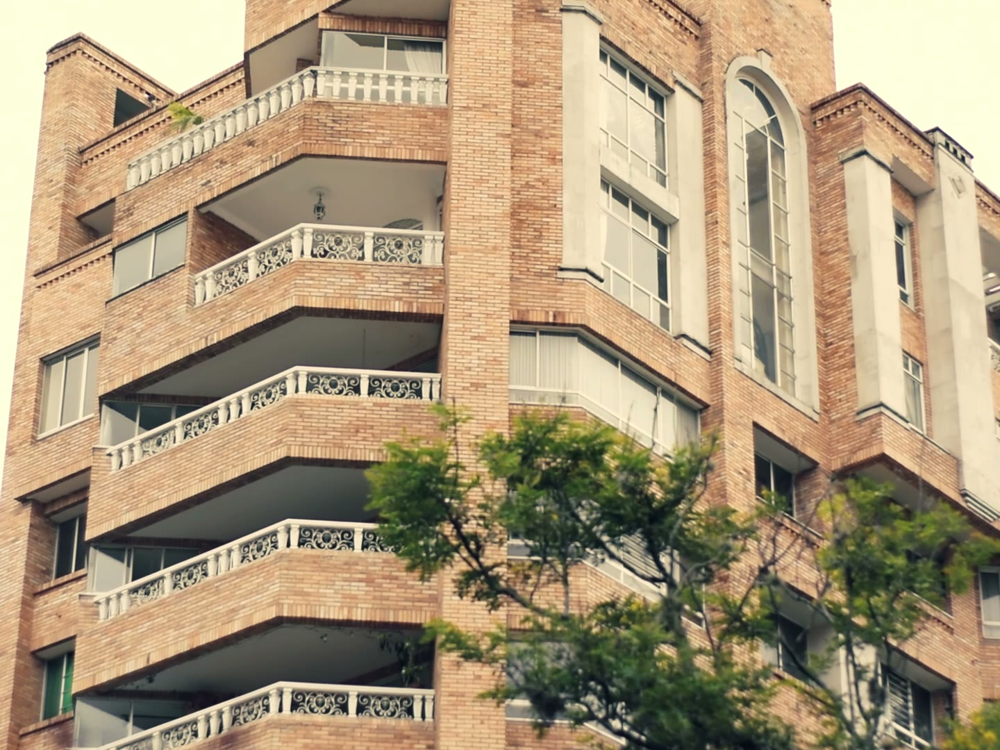
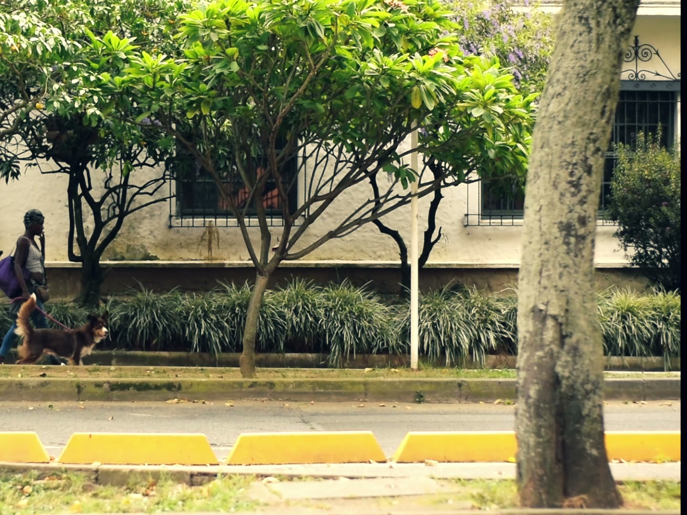
Fotografía Editorial
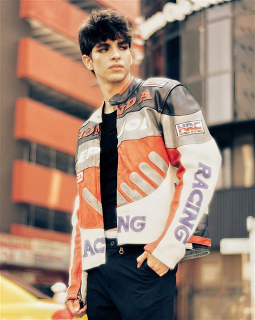
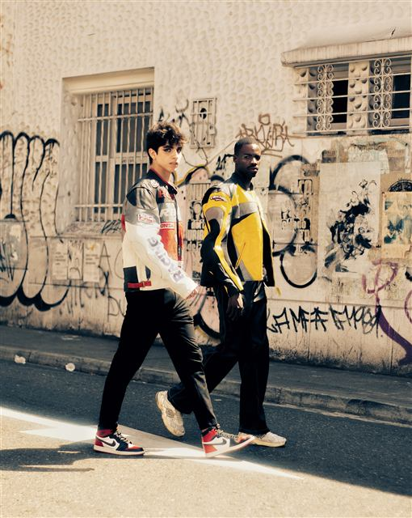
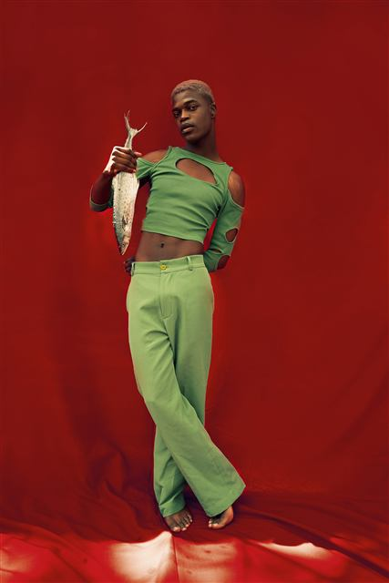
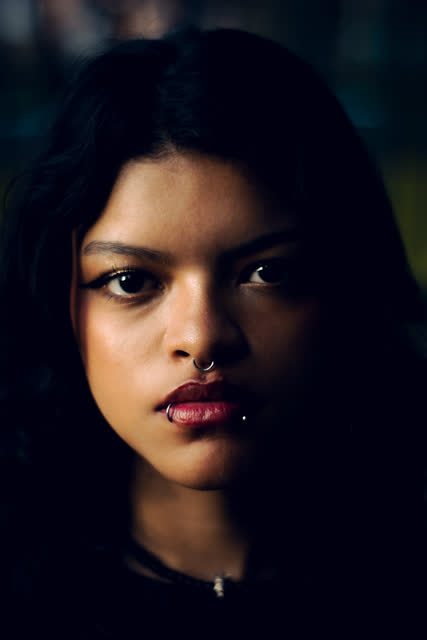
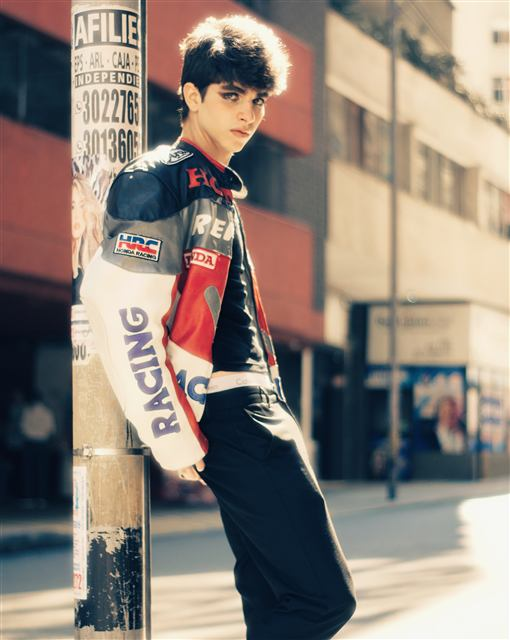
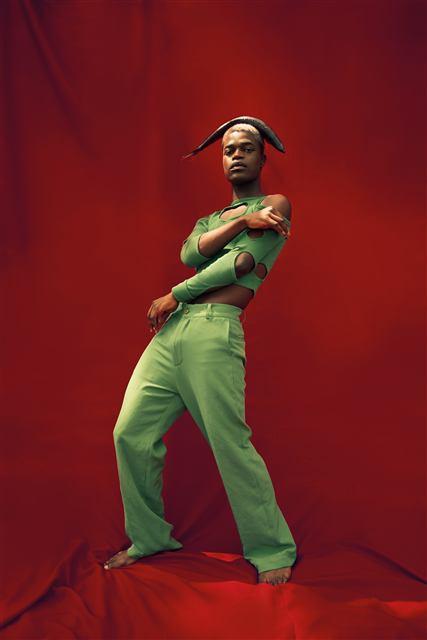
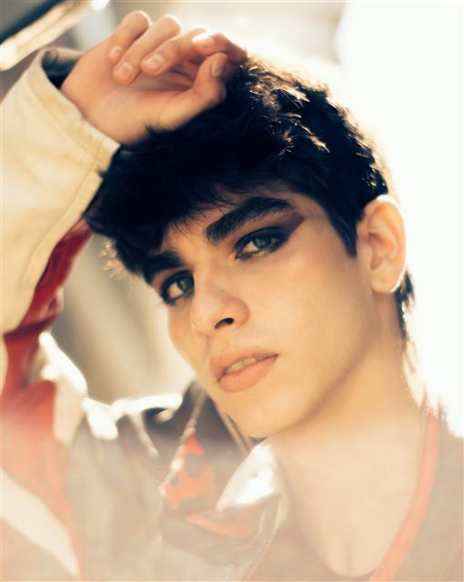
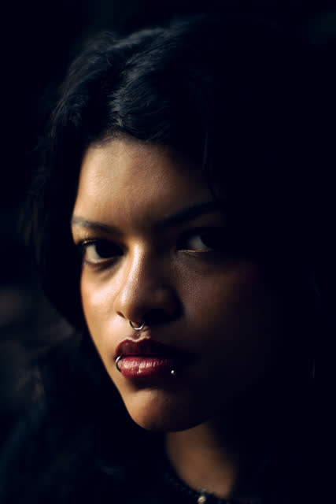
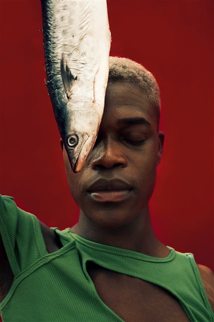
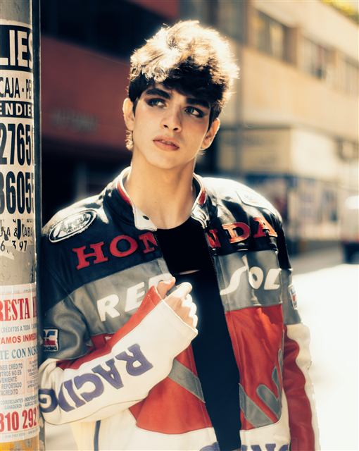
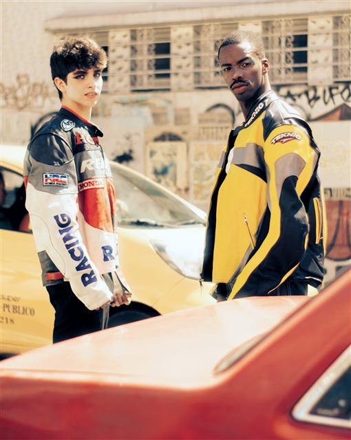
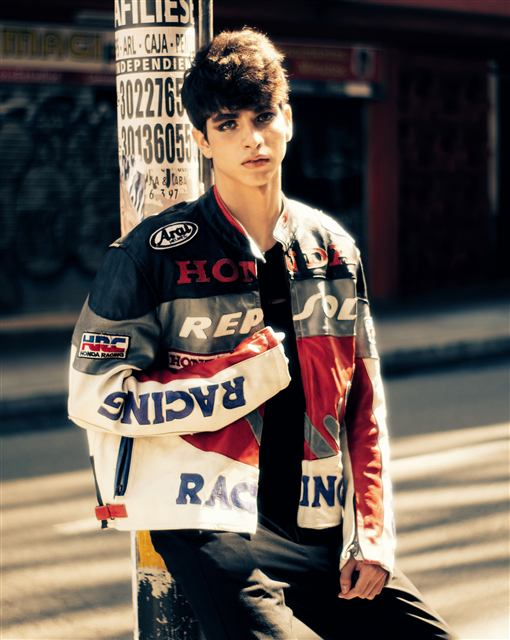
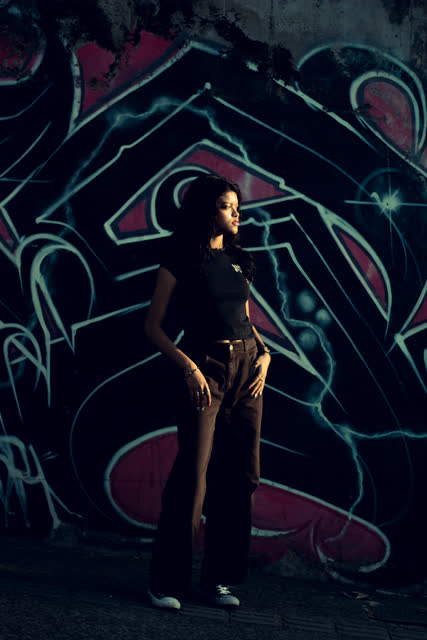
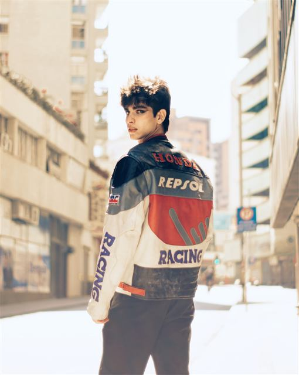
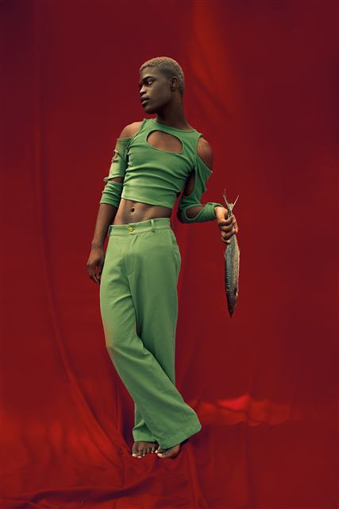
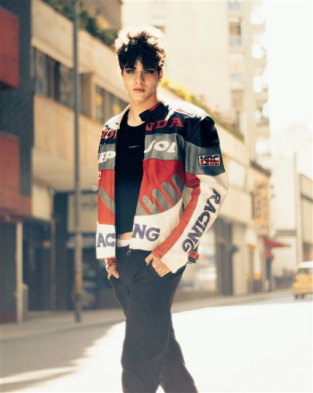
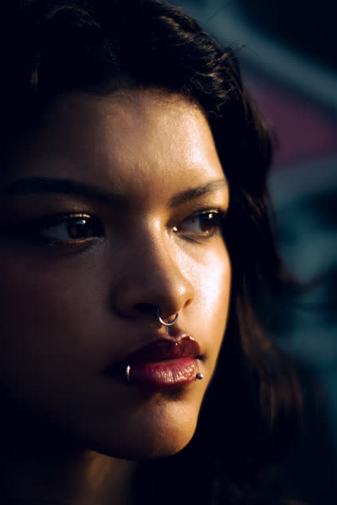
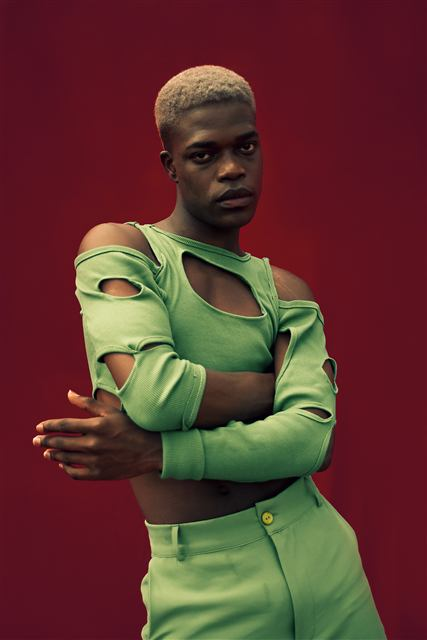
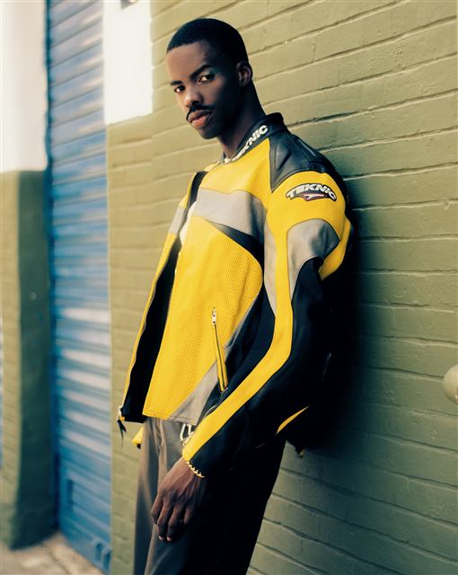
Domino & Marta
Cine Documental
Tour de Café & Origen
Café La Manchuria
Café Colombia F1 · Jorge Posada
Finca El Guanábano
Colombia F1 · Introducción
Jorge Alberto Posada
Café Caturro Chiroso
Concordia, Antioquia
Café Chiroso · Finca El Verdún
Concordia, Antioquia
Bitácora Chiroso
Registro de origen
Eduardo Vélez
Eduardo Vélez · Bourbon Rosado, fincas y fotografía
Eduardo Vélez · Salgar, Antioquialamanchuria.com
Bourbon Rosado
Caja amarilla
Finca Las Flores · Bourbon
Finca Las Flores · Chiroso
Finca Rosi Café
Concordia · Fotografía
Social